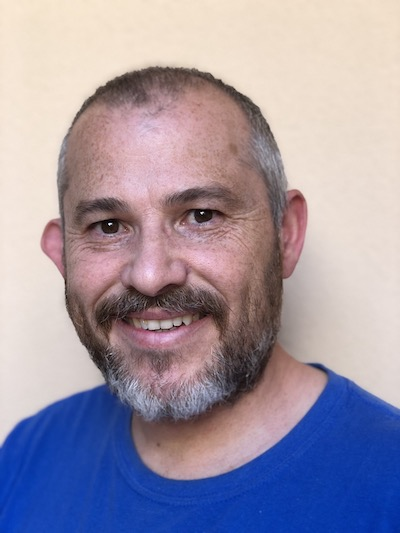

Diego Freniche Brito - Mobile Apps Developer, sometimes Teacher

Contact info
Social:
- Twitter: https://twitter.com/dfreniche
- LinkedIn: http://es.linkedin.com/in/dfreniche
- Github: https://github.com/dfreniche
- StackOverflow: http://stackoverflow.com/users/225503/diego-freniche
Blog: http://www.freniche.com
Current location:
- ☀️ El Saucejo, Seville (Spain)
- üåç Traveling sometimes
Current Position
(Jan 2018 - ) Senior Mobile developer at Teamwork.com.
For two years I’ve been maintaining the existing Projects & Desk Mobile Apps, written in CoffeeScript / Titanium Appcelerator. Technologies used:
- Node.js
- CoffeeScript
- Axway Appcelerator
- Swift / Java (for the native modules and extensions)
- gulp, bash, Ruby for the tooling
I’ve been helping with the native/Swift Chat App and currently I’m working on the new native iOS App for Teamwork, using:
- Xcode (of course)
- clean architecture, several layers
- tests with Quick/Nimble
- RxSwift
- Realm
- Cocoa Pods & SPM
- Bitrise as CI
- SwiftLint
- Sourcery
Past experience
Mobile Developer at Mobile Jazz:
- crafting Android & iOS Apps in Swift / Objective-C
Freelance
- developing Apps in a contract-based basis
- teaching public & private sector customers how to develop iOS & Android Apps. I teach in Spanish & English, mainly inside Spain but also in other countries.
IT Service Manager at Isotrol
August 2008 – December 2009 (1 year 5 months)
- in charge of a team of 8 System Admins
- organizing, developing, maintaining all the IT infrastructure for a +250 organization
Responsible of in-house training at Isotrol
January 2007 – August 2008 (1 year 8 months)
- working with HR, create and execute a training plan using both private and public funds.
- execute +14000 training hours / year
Consultant at Incyde
2005 – 2006 (1 year)
- working with SMEs, helping in their IT needs with a clear focus in making more money with IT
Teacher (Linux & Java) as a Freelance January 2000 – November 2006 (6 years 11 months)
- Creating course agendas and materials. Organizing travel. Teaching people.
Freelance Writer at PCWorld España
June 2004 – January 2005 (8 months)
Freelance Team Manager at Telefonica Soluciones
November 2002 – August 2003 (10 months)
- building a team to develop complex web pages for mayor Towns in Spain
Founder at Elelog, S.L. at 2000 – 2003 (3 years)
Programmer at Isotrol
September 1997 – August 1999 (2 years)
Computer technician / VB Programmer at Teknoservice, S.L.
1997 – 1998 (1 year)
Skills
- Strong IT knowledge: I love Computer Science. Always learning. Always trying to improve, both personal and professionally.
- Programming languages I’ve used in chronological order: BASIC, PASCAL, C, C++, Clipper, Delphi, VB6, Java, Objective-C, JavaScript, Kotlin, Swift
- Also have a good foundation using UNIX operating systems: been using Linux since 1994, OS X since 2008. Have been running a small data center (120 servers) at Isotrol.
- Outstanding communication skills both oral & written. Thanks to an extensive training & speaking experience (+12 years) and constant learning. I’m used to speak in public.
- Team building: I’ve been building/leading teams through all my career.
Public speaking
- Speaker at AltConf Madrid 2019
- Speaker at iOSDevUK 2016
- Speaker at Seville Developers Conference
- Speaker at iOSDevUK 2014
- Speaker (two workshops, iOS) and Android) at the Gran Canaria TIC (GCTIC) Forum
- Speaker at the WipJam - MWC 2014
- Speaker at the NSSpain conference, Sept 2013
- Speaker at the BCNDevCon conference, Dec 2012
- Founder of the NSCoder Nights Seville meeting group of Cocoa developers
- Regular appearances at the Spanish development podcast We.Developers
Publications
- Writer at MacWorld Spain
- Writer at PCWorld Spain (topic: Linux)
Industry certifications
- SCJP 1.6 (Sun Certified Java Programmer) / Oracle
- SCJP 1.5 (Sun Certified Java Programmer) / Oracle
- SCWCD 1.5 (Sun Certified Web Component Developer)
- SCBCD 1.3 (Sun Certified Business Component Developer)
- ITIL Foundation v2 OGC / APM Group
Education
University of Seville - Bachelor on Computer Science (Informática SS.FF.)
Read other posts